タイムカード一覧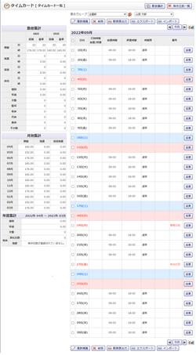
タイムカード編集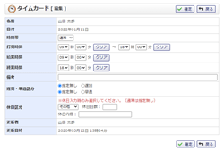
管理者設定メニュー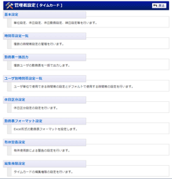
勤怠集計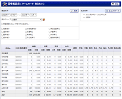
基本設定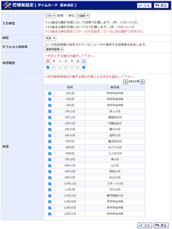
基本設定確認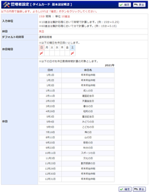
時間帯設定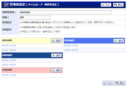
時間帯設定登録
時間帯設定編集
個人設定 基本設定
編集権限設定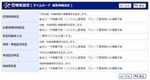
編集権限設定確認
個人設定メニュー
勤務表一括出力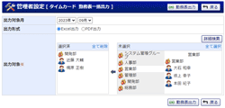
勤務表一括出力
時間帯設定一覧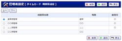
ユーザ別使用時間帯設定一覧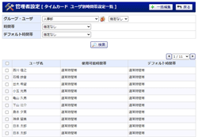
ユーザ別使用時間帯設定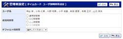
タイムカード インポート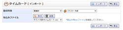
タイムカード インポート確認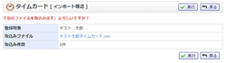
休日区分設定一覧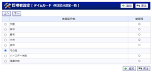
休日区分登録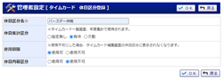
休日区分編集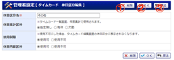
休日区分登録確認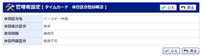
勤務表フォーマット設定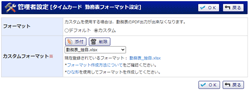
勤務表フォーマット設定確認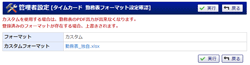
管理者設定 有休日数一覧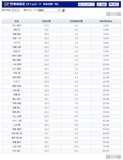
管理者設定 有休日数登録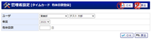
管理者設定 有休日数編集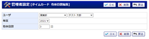
管理者設定 有休日数登録確認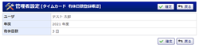
管理者設定 有休日数インポート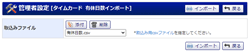
管理者設定 有休日数インポート確認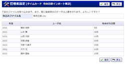
管理者設定 有休警告設定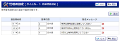